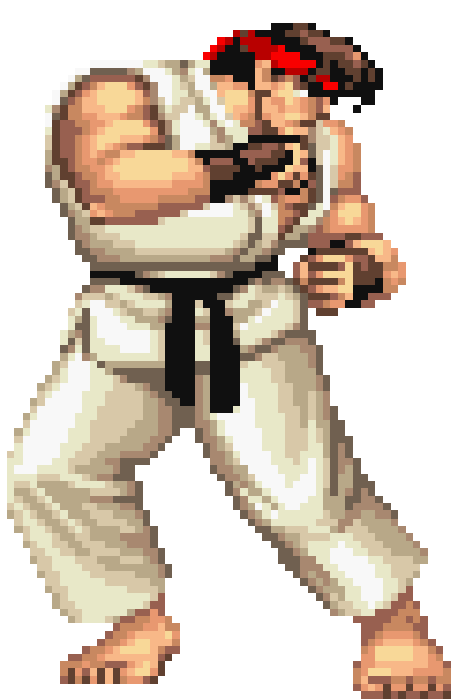
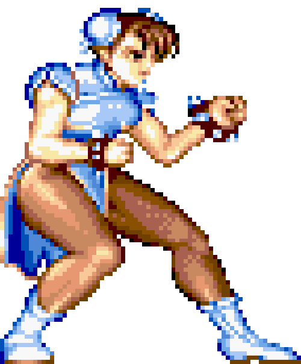
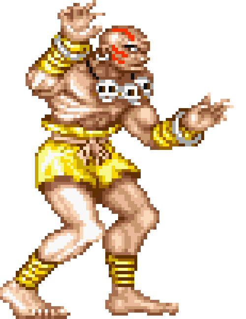
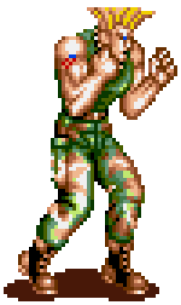
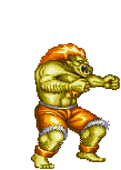
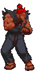
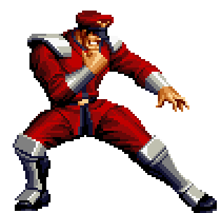
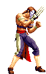

-
Ryu #001
- Ansatsuken
- Japão
É um lutador japonês, personagem principal da série Street Fighter. Ele foi treinado na arte marcial Shotokan Karate por seu mestre Gouken. Ryu é conhecido por sua busca incessante pela perfeição e pelo seu uso da técnica Hadouken.
-
Chun-li #002
- Kung Fu
- China
Primeira personagem feminina da série Street Fighter, ela é uma policial chinesa que entra no torneio para buscar vingança contra a organização criminosa Shadaloo, que matou seu pai. Chun-Li é conhecida por seus chutes poderosos e rápidos.
-
Dhalsim #003
- Yoga E.
- Índia
Lutador indiano conhecido por suas habilidades de yoga, Dhalsim entra no torneio para arrecadar dinheiro para sua aldeia e família. Ele é conhecido por seus ataques a distância e por sua habilidade de esticar os seus membros.
-
Guile #004
- Pro Wrestling
- EUA
É um lutador americano e membro das Forças Armadas dos Estados Unidos. Ele entra no torneio Street Fighter para se vingar da organização Shadaloo, que capturou seu amigo Charlie. Guile é conhecido por sua técnica de ataque Sonic Boom.
-
Blanka #005
- Selvagem
- Brasil
É um lutador brasileiro que foi criado por animais selvagens na selva amazônica. Ele entra na competição para encontrar sua mãe e seu pai desaparecidos. Blanka é conhecido pelos ataques elétricos e pela habilidade de se camuflar na natureza.
-
Akuma #006
- Ansatsuken
- Japão
Akuma é um guerreiro frio e extremamente poderoso, cuja única razão de ser é aprimorar suas habilidades de luta lutando e destruindo inimigos fortes. Ele raramente exibe qualquer sinal de emoções ou humanidade, além de ocasionais rajadas de raiva, e raramente sorri.
-
M. Bison #007
- Poder Psíquico
- Des.
M. Bison é o comandante e líder supremo da Shadaloo, uma terrível e poderosa facção criminal do verso Street Fighter, cujo objetivo é a dominação mundial.
-
Vega #008
- Ninjutsu
- Espanha
Vega nasceu em uma família privilegiada daCatalunha, na Espanha. Por razões desconhecidas, o status financeiro de sua família diminuiu, forçando a mãe de Vega a contrair dívidas. Mais maduro, Vega estudou touradas, uma tradição cultural de seu país. Depois, ele foi para o Japão e aprendeu ninjutsu, um estilo que ele acreditava se adequar à sua graça e agilidade naturais. Juntando as touradas com o ninjutsu, Vega entrou em uma gaiola de combate de um circuito, e rapidamente se tornou um dos melhores lutadores.